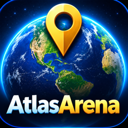
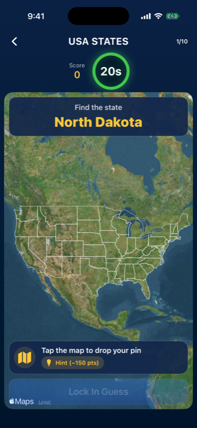
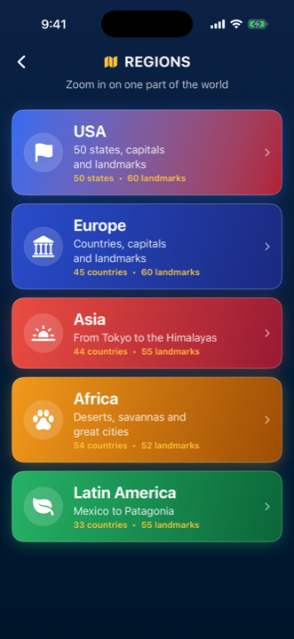
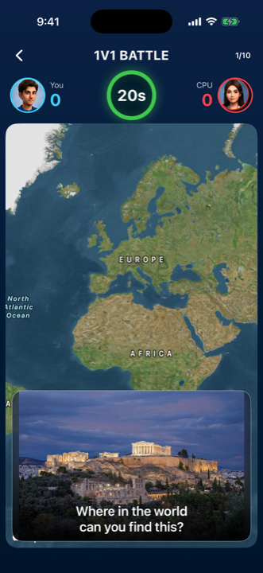
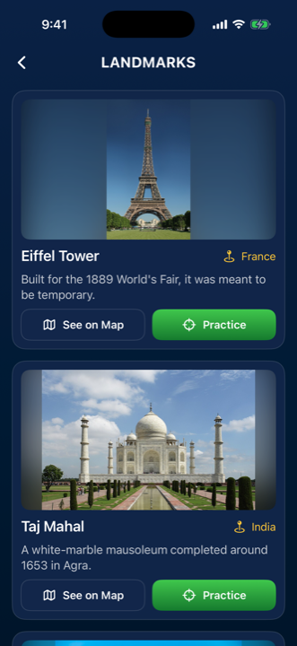

Start with the map
Choose USA, Europe, Asia, Africa or Latin America. Practice states or countries, capitals and landmarks, with hints when you need them.

Atlas ArenaGEOGRAPHY MAP QUIZ · iPHONE & iPAD
Find all 50 US states. Pin world capitals. Recognize a famous place from its photo. Atlas Arena turns the map into your next challenge.
View on the App Store ↗No ads. No in-app purchases.
Online matches use Apple Game Center.

EXPLORE. GUESS. LEARN. COMPETE.
Choose USA, Europe, Asia, Africa or Latin America. Practice states or countries, capitals and landmarks, with hints when you need them.
Play solo, face the computer, or share a phone in Pass & Play. Try a Daily Challenge, a 70-second Speed Run or online 1v1.
Explore photos, maps and facts in Learn Mode. Earn coins through play to unlock pins, map skins and avatars.



Photos aren't loading. AtlasArena loads photos from Wikipedia, so it needs an internet connection. Check Wi-Fi or mobile data and try again.
How does scoring work? The closer your pin, the more points you get (up to 1,000), plus a 250-point bonus when your guess counts as correct. On Easy, any pin in the right country is correct. Medium needs to be within about 150 km, and Hard within about 50 km.
How do I earn coins? +5 coins for every correct answer and +20 for every finished game. Spend them in the Shop on pins and map skins. There are no real-money purchases.
How do I play Pass & Play? Two players share one phone. Player 1 guesses, then hands the phone over. Player 1's pin stays hidden until Player 2 has guessed.
How do I start over? Open Settings (the gear on the home screen) and tap Reset Progress.
Questions, bugs or ideas? Email Atlas Arena support.
Photos require an internet connection. See the App Store listing for device compatibility and current availability.